Dieses Fenster steht sowohl als Matchcode für XML-Schematas sowie als "XML-Schemata-Editor" zur Verfügung.
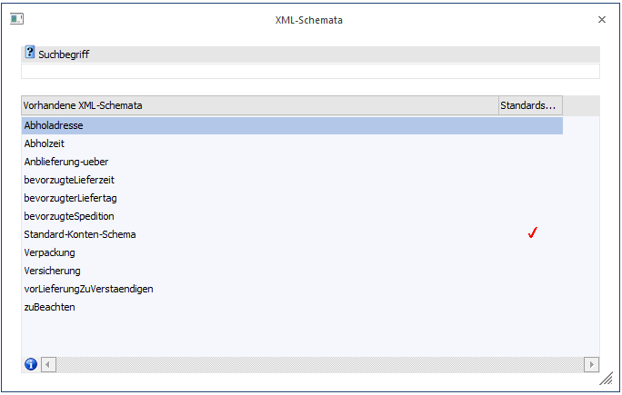
Im Falle des "Matchcodes" kann durch einen Doppelklick auf ein vorhandenes XML-Schemata dieses als XML-Erweiterung in den entsprechenden Eintrag (Konto oder Beleg) übernommen werden.
Im Falle des "XML-Schemata-Editor" können hier neue Schemata angelegt, bestehende Schemata editiert oder Schemata gelöscht werden. Weiters können die Schemata ex-, bzw. importiert werden.
Bei einer Neuanlage bzw. beim Editieren eines XML-Schematas stehen folgende Funktionen zur Verfügung:
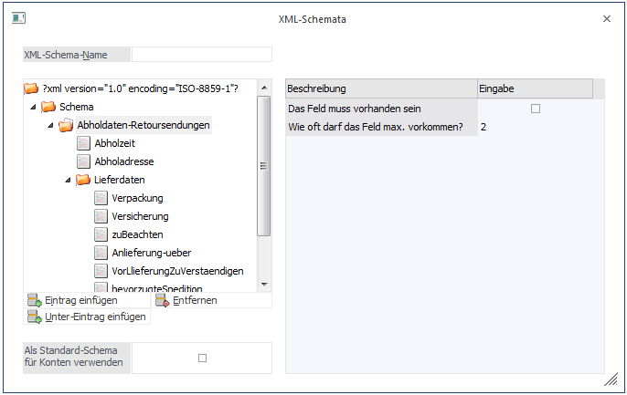
Ø XML-Schema-Name
In diesem Eingabefeld kann der Name des XML-Schemas festgelegt werden.
Ø Baumstruktur
In der Baumstruktur auf der linken Seite wird die Definition des XML-Schematas dargestellt.
Ø Eintrag einfügen
Durch Anwählen dieses Buttons können neue Tags in das XML-Schemata eingefügt werden. Die Bezeichnung kann durch Drücken der F2-Taste editiert werden.
Ø Entfernen
Mit diesem Button können Einträge aus dem XML-Schemata entfernt werden.
Ø Unter-Eintrag einfügen
Über den Button "Unter-Eintrag einfügen" können Tags eingefügt werden, wodurch jenes Tag das zum Zeitpunkt des Drückens des Buttons aktiv war als übergeordnetes Tag definiert wird.
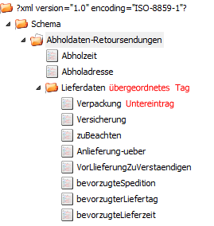
Tabelle im rechten Bereich
In der Tabelle im rechten Bereich des Fensters können div. Einstellungen zum jeweils aktivierten Tag erfolgen:
Ø Das Feld muss vorhanden sein
Ist diese Option aktiviert so muss dieses Tag in der XML-Erweiterung vorhanden sein.
Ø Wie oft darf das Feld max. vorkommen?
Über diese Option wird gesteuert wie oft das Tag in der XML-Erweiterung enthalten sein darf.
Ø Das Feld muss einen Wert enthalten
Bleibt die Checkbox deaktiviert so muss in der XML-Datei kein Wert für dieses Tag vorhanden sein. Wird die Option aktiviert so muss das Tag einen Wert enthalten. Andernfalls erfolgt beim Erzeugen der XML-Datei eine entsprechende Meldung.
Ø Feldtyp
Mittels Feldtyp wird gesteuert welche Inhalte ein Tag haben kann:
ü 1 Text
Freie Texteingabe wobei im zusätzlichen Feld "Eingabelänge" die Länge des Textes definiert werden kann.
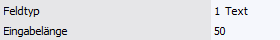
ü 2 Zahl
Eingabe von Zahlen wobei im eigenen Eingabefeld "Eingabelänge" die Lägen der Zahl festgelegt werden kann; im eigenen Eingabefeld "Nachkommastellen" können diese definiert werden.
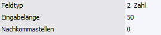
ü 3 Datum
Angabe eines Datums
wobei im zusätzlichen Eingabefeld "Datumsformat" dieses festgelegt werden kann.
Das Datumsformat wird beim Export der XML-Datei berücksichtigt; d.h. das
Editieren in der XML-Erweiterung erfolgt im "normalen" Datumsformat.
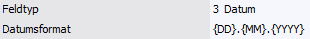
ü 4 Mehrzeilige Eingabe
Dieser
Feldtyp erlaubt eine mehrzeilige Texteingabe in einem eigenen Notizfeld. In der
Tabellenzeile werden die ersten Zeichen (ohne Zeilenumbrüche dargestellt.
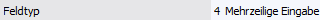
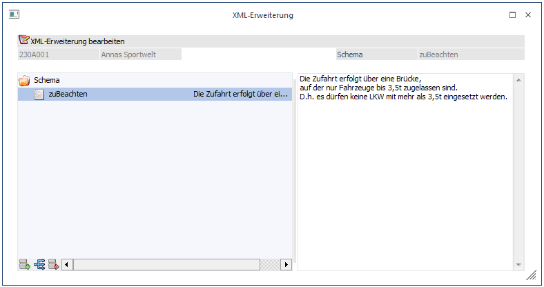
ü 5 Auswahlliste
Bei diesem
Feldtyp kann im eigenen Eingabefeld "Auswahl bearbeiten" definiert werden,
welche Werte in diesem Tag in der XML-Erweiterung aus einer Auswahllistbox
übernommen werden können (das Eingabefeld ist mit ca. 8000 Zeichen
begrenzt).
Bei den einzelnen Auswahlmöglichkeiten muss darauf geachtet werden dass der "Key" (z.B. 1) mit dem Beschreibungstext (z.B. Montag) durch einen Doppelpunkt (":") getrennt, sowie die einzelnen Auswahlmöglichkeiten durch einen Strichpunkt (";") getrennt werden müssen.
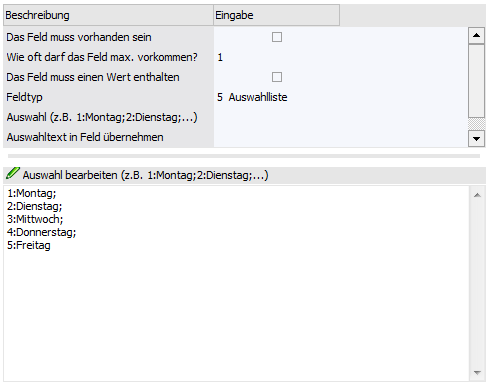
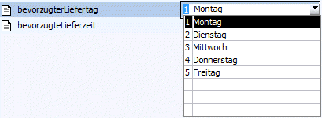
Im Feld "Auswahltext in Feld übernehmen" kann ein Tag angegeben werden, in welches der gewählte Wert der Auswahllistbox (in der XML-Erweiterung) gestellt werden soll. Dieses Tag darf jedoch in keiner darüberliegenden Ebene sein!
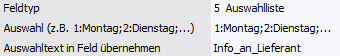
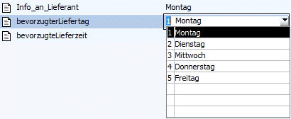
Ø Beschreibung
Für jedes Tag kann optional eine Beschreibung eingegeben werden. Diese Beschreibung wird bei der Erfassung der Daten in einer eigenen Spalte angezeigt.
Ø Als Standard-Schema für Konten verwenden
Ist diese Option aktiviert, so wird bei Konten in denen noch keine XML-Erweiterung hinterlegt ist das Fenster "XML-Erweiterung" nicht mit der leeren Tabelle geöffnet sondern sofort das "Standard-Schema" geladen. Mittels Eintrag in der Datei "mesonic.ini":
[XMLSchema]
AlwaysUseStandard=1
Kann definiert werden, dass dieses "Standard-Schema" auch dann verwendet wird, wenn bereits ein XML-Schemata beim Konto hinterlegt ist, welches aber nicht dem Standard-Schema entspricht (die alte XML-Erweiterung geht dabei verloren).
Auf die XML-Erweiterungen von Belegen hat diese Option keine Auswirkung.
Buttons
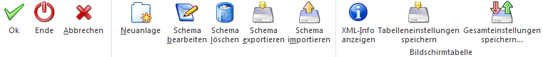
Ø OK
Durch Drücken des OK-Buttons können Änderungen bzw. neu angelegte XML-Schemata gespeichert werden.
Ø Ende
Mit dem Ende-Button kann das Fenster geschlossen werden. Nicht gespeicherte Angaben werden dabei verworfen (XML-Schemata-Editor).
Ø Abbrechen
Durch Drücken des Abbrechen-Buttons wird die Neuanlage bzw. das Ändern eines XML-Schematas abgebrochen und in die Anzeige der vorhandenen XML-Schematas gewechselt.
Ø Neuanlage
Zur Anlage eines neuen Schematas muss dieser Button gedrückt werden.
Ø Schema bearbeiten
Durch Anwählen dieses Buttons kann ein bestehendes Schemata bearbeitet werden
Ø Schema löschen
Mit dieser Funktion können XML-Schemata gelöscht werden.
Ø Schema exportieren
Dient zum Export eines XML-Schemata in Form einer XML-Datei
Ø Schema importieren
Mit der Importfunktion können XML-Dateien als XML-Schemata importiert werden.
Ø XML-Info anzeigen
Durch Anwählen dieses Buttons wird im rechten Teil des Fensters das zugehörige XML-Schemata dargestellt.
Ø Tabelleneinstellungen speichern
Die Spalten einer Tabelle können grundsätzlich an beliebige Positionen verschoben, bzw. in der Breite entsprechend angepasst werden. Durch Anwahl des Buttons "Tabelleneinstellungen speichern" werden die Einstellungen benutzerspezifisch gespeichert und bei dem nächsten Aufruf des Programmpunktes wieder vorgeschlagen.
Ø Gesamteinstellungen speichern
Im Gegensatz zu "Tabelleneinstellungen speichern" können mit "Gesamteinstellungen speichern" mehrere Tabellenaufbauten gespeichert und nach Wunsch geladen werden. Zusätzlich werden Sonderfunktionen der Tabelle (z.B. "Spalte gruppieren") ebenfalls bei der Speicherung bedacht.
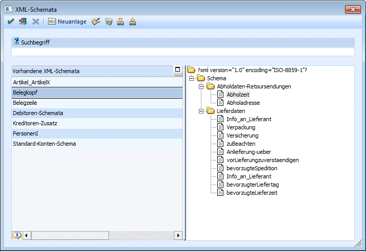